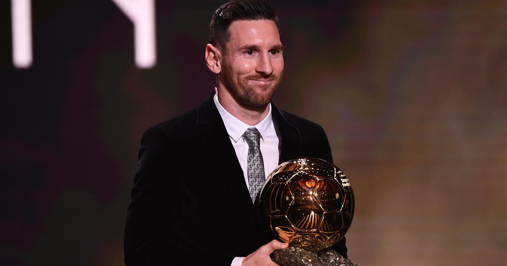

TIMELINE
24 June 1987
Born in Rosario, Argentina to Celia Maria Cuccittini and Jorge Messi
1991
At the age of 4 Lionel Messi joined the local club Grandoli where his dad coached him
March 3 1994
Messi joined the league of Newell Old Boys
1997
Messi almost scored 500 goals for his club Newells and there was a lot of talk about his future as a professional footballer
1998
Messi was diagnosed with a growth defect and couldn't afford treatment
December 14 2000
Lionel Messi received a trial run at the FC Barcelona, he also moved to Spain to get treatment paid for by the coach of FC Barcelona
October 16 2003
Made his first appearance on field against FC Porto in a friendly match
May 1 2005
Became the youngest player to score a goal for the FC Barcelona team
2007
Created the Leo Messi Foundation to help support disadvantaged children
November 2 2012
Messi's son, Thiago Messi, was born
September 11 2015
Messi's son, Mateo Messi, was born
June 30 2017
Got married to Antonella Roccuzzo

Honours and Awards
La Liga Best Player
2009, 2010, 2011, 2012, 2013, 2015, 2017, 2018, 2019
Ballon d'Or
2009, 2010, 2011, 2015, 2019
Most Goals in a Season
2011
UEFA Team of the Year
2008, 2009, 2010, 2011, 2012, 2014, 2015, 2016, 2017, 2018, 2019